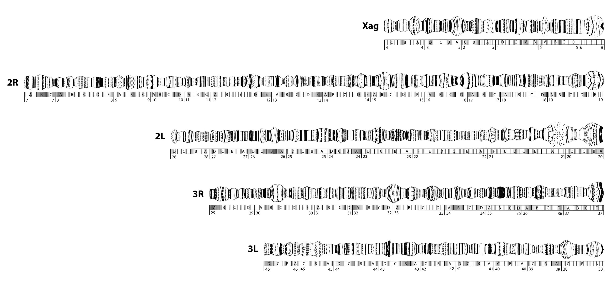

Rules and conventions for naming genetic features in mosquitoes (and other arthropod vectors)
NOTE: We encourage the mosquito community and other vector communities to follow these same rules. Most of the recommendations that follow are intended to simplify automatic computer searches and other such analyses.
1. Introduction
The following rules for the genetic and molecular nomenclature of all mosquitoes are proposed. These are based on the equivalent set of rules developed for Anopheles gambiae and other anophelines that were adopted by an International Anopheles Genome Executive Committee after the publication of the complete genome sequence data (Holt et al. 2002: PMID 12364791). Part of these rules were published in the supplementary material of the paper by Christophides et al. (2002: PMID 12364793), while additional rules were adapted, in a simplified form, from those governing the nomenclature of Drosophila. Should authors realize that they need more detailed instructions, they should contact the VectorBase (info@vectorbase.org) and discuss the matter.
Authors are urged to use these rules when naming genes or other genetic structures to avoid unsystematic and duplicate names. VectorBase will be curating gene names through the metadata web submission form, which encourages naming that uses these conventions. Batch submissions can be made using an spread sheet as described in this FAQ. Should a name be identified, which does not agree with the rules, the author will be contacted by VectorBase and alternatives will be suggested. In case of a continued disagreement, VectorBase will keep the "incorrect" name as a synonym, while a valid name will be assigned to the gene or genetic structure.
2. Genes
Gene names are to be modeled on those recommended by the Human Genome Organization (HUGO) for naming human genes. The rules are as follows:
2.1. The names are mnemonic symbols, designed for easy recall. They do not aim to summarize all current information (orthology, function, chromosomal location), which in any case is incomplete and subject to errors.
2.2. To avoid errors in electronic communication, all names consist exclusively of capital letters of the Latin alphabet and Arabic numerals; no punctuation marks, dashes etc. are used.
2.3.The role of species designations in gene names: To minimize the length of gene names, the formal names do not include taxonomic initials. If similarly named genes of two organisms are being compared, taxonomic initials can be added for convenience, but do not constitute part of the name (e.g. AgamTEP to be easily distinguished from DmelTep). This prefix has the form Nnnn\, where N is the initial letter of the genus (i.e., A for Anopheles, B for Bironella and C for Chagasia) and nnn is a unique code, usually the first three letters of the species name (e.g., ara for A. arabiensis). The same Nnnn prefix can be used to designate species from different mosquito genera. For example AgamXDH could be distinguished from AaegXDH in text describing the XDH genes from Anopheles gambiae and Aedes aegypti. The prefix is a qualifying designator of convenience, not a formal part of the gene name. The format of the taxonomic prefix is a recommendation only.
2.4.Roman letters and numerals indicate protein, italics indicate gene or RNA.
2.5.The name can be based on sequence similarities, and thus need not carry a functional implication, which must be determined experimentally. Alternatively, where gene function is known, the name can be based on gene function.
2.6.The name consists of two to three contiguous fields, as follows:
- The first field includes three to five letters and is an abbreviations of the highest sequence grouping used, usually a protein family, e.g. CLIP (for Clip-domain serine protease), or SCR (for Scavenger Receptor)
- The second field, if present, includes one or more letters identifying a subgroup such as subfamily (e.g. CLIPD), or class (e.g. SCRB).
- The third field enumerates each gene by using consecutive numerals (e.g. SCRB1,...12).
- Sometimes the third field numeral can be preceded by letter(s) indicating gene types within a subgroup (e.g. SCRBQ1, for a gene belonging to the SCRB Class, and to the croquemort type).
- For historical reasons, in certain families, the third field can also enumerate by letters rather than numerals (e.g. PGRPLA, for gene A of the Long subfamily in the PGRP family).
2.7.It is recommended that names previously used in the literature or in database submissions be gradually replaced by systematic names, following consultation with the original author. Historical names or names that may be developed eventually to indicate experimentally verified function or orthology can be used as synonyms.
2.8.Allele names and symbols
2.8.1. Superscripts. Alleles of a particular gene are designated by the same name and symbol, but they may be differentiated by distinguishing superscripts. In written text the allele designation may be separated from that of the gene by a hyphen, e.g., white-apricot.
2.8.2. Symbols. Allele symbols should be short, preferably no more than three characters long, and cannot contain spaces, superscripts, or subscripts.
- Whenever possible superscript characters should be limited to the following set: a-z A-Z 0-9 - + : .
- The + symbol is reserved for the wild-type allele. Consecutive allele numbers should be used wherever possible.
- Greek characters should NOT be used.
- The character \ is reserved in all gene symbol contexts for species identification.
- The character / is reserved as a homologue separator in genotypes and cannot be used in allele symbols.
- In text in which superscripting is not possible, such as ASCII files, superscripted text should be enclosed between the characters [ and ].
3. Cytogenetic descriptions (applicable only to species with polytene chromosomes)
Breakpoints should be according to the polytene chromosome maps for the species. Where maps are being created, we recommend that both a photographic reproduction of the map, as well as a schematic representation be produced. VectorBase will display these maps or refer to their publications. For example, see Figure 1 and this link for access to BAC photographs.
Range designations. For the location of a single object (breakpoint of aberration, gene position, site of transposon insertion, etc.) the range is given as "(d1)(S1)-(d2)(S2)", where:
d = numbered division (1 to N)
S = lettered subdivision (A to X)
If the range encompasses two different numbered divisions (i.e., d1 does not equal d2), then the full designations for both the left end and the right end of the range will be used, e.g., 32A-33A.
If the range is within a single numbered division (i.e., d1=d2) but within different subdivisions (i.e., S1 does not equal S2), then the numbered division designation is not repeated to the right of the hyphen, e.g., 32A-D.
Figure 1: Cytogenetic map of the Anopheles gambiae sensu stricto ovarian polytene complement indicating numbered divisions, lettered subdivisions, and ten infradivisions per subdivision (Pombi et al., BMC Evolutionary Biology 2008, 8:309 ) Click above for higher resolution version.
4. Chromosomal aberrations / Inversions
At this time the primary natural chromosomal aberrations described in mosquitoes are inversions. The corresponding bibliography is relatively long, and the data are very crucial. Most inversions have been named using a semi-systematic way. The following paragraphs will give instructions for the naming of new inversions, as well as for the "renaming" of the old ones. VectorBase will continue listing the existing names as synonyms, such that the database will be searchable once curation has been initiated.
4.1. Inversions have the symbol In(nA)m, where n indicates the number of the chromosome involved, A the arm or arms involved and m is a specific designator. In the case of multiple-break intrachromosomal rearrangements, the distinction between inversions and transpositions often becomes ambiguous. An intrachromosomal rearrangement that can be partitioned into a duplicated and a deficient product by exchange with a normal-sequence chromosome is designated a transposition even though it may carry an inverted segment; otherwise, it is designated an inversion.
4.2. If it is not known whether or not an inversion is paracentric (does not include the centromere) or pericentric (includes the centromere) then the indicator of chromosome arm(s) is omitted, i.e., In(n)m.
5. Representation of gene, allele and aberration names and symbols in text
5.1. Italic. Gene, allele, aberration and transposon/transgene-construct names and symbols are italicized in printed text.
5.2.Non-italic. When a full gene name or gene symbol is used to indicate phenotype, rather than genotype, then that name or symbol is printed in roman (non-italic) type; i.e., white indicates a genotype and white a phenotype.
5.3.Superscripts and subscripts. In ASCII text the characters [ and ] are used to enclose superscripted characters, and [[ and ]] used to enclose subscripts.
5.4.Cytogenetic terms. Cytogenetic designations are not italicized except when part of an aberration symbol.
5.5.Reserved characters. The following characters are reserved for special use in gene, allele, and aberration names and symbols:
- \ reserved for use in symbols of genes from species other than A. gambiae
- { } reserved for use in transposon and transgene construct symbols
- < > reserved for use in transgene construct names and for cytotype designation in stocks
- [] reserved for indicating superscripts in ASCII text
- [[ ]] reserved for indicating subscripts in ASCII text
- ( ) reserved for use in compound gene names and symbols (e.g., l(1)) and for aberration symbols, and for the indication of ambiguous genotypes
- ; reserved as a separator of chromosome (chromosome arm) numbers in aberration names and symbols, and to separate markers or aberrations on non-homologous chromosomes in stock genotypes
- : reserved for use in symbols of defined classes, i.e., transgene constructs, genes encoding special RNAs (tRNAs, snRNAs), fusion genes and mitochondrial genes, and, in stock genotypes, to indicate the association between markers on reciprocol components of translocations, or arms of compound chromosomes.
6. Gene products
6.1.Proteins. Protein products that are named for the gene may be symbolically designated in text by the gene symbol, but this symbol is all in roman capital letters.
6.2.RNAs. There is no convention for symbolically designating RNA products of genes in text. An italicised gene name can also serve to refer to its mRNA where this is unambiguous.


{kind=link}